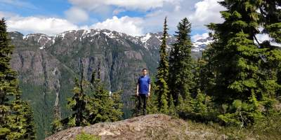
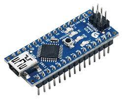

Home
Home Resume
Resume Projects
Projects Hobbies
Hobbies Contact
ContactHiking

On weekends, especially during the summer time, I enjoy going for hikes. Hiking for hours can be a difficult task, but it's always worth it to see the beautiful, scenic landscapes here in British Columbia.
During the summer of 2021, me and four other guys completed the West Coast Trail hike. This is a famous hike on Vancouver Island where hikers trek for 75 km in the forest and on the beach. It took my group and I seven days to complete. It was definitely very interesting spending this long eating freeze dried meals and sleeping in tents.
Although I enjoy being in civilization and having access to hot showers, I feel that being in nature helps me to step back and gain a new perspective of the world.
Arduino Programming
I've been interested in the world of electronic circuits as far back as I can remember, and although it's a very daunting hobby to get into, it can be incredibly satisfying when you get something to work.
I've found that the easiest way to get electric circuits to do what you want is to use a microcontroller, such as an arduino.
 Github
Github
 Linkedin
Linkedin
 Stackoverflow
Stackoverflow